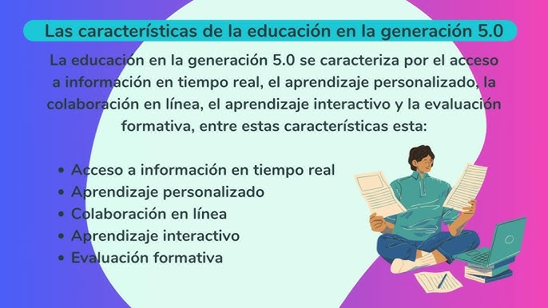

Definición generación 5.0

La generación 5.0 nos define como una generación futura que se caracteriza por estar completamente inmersa en la era digital.
Ficha Descriptiva
2.1. CARACTERÍSTICAS DE LA GENERACIÓN 5.0
La evolución de herramientas que nos han permitido el aprendizaje incluye desde libros impresos hasta plataformas de e-learning y realidad aumentada.
2.2. LAS TECNOLOGÍAS Y LA ERA DIGITAL
Un estudiante de hoy se siente empoderado gracias al acceso a información ilimitada y herramientas que facilitan la colaboración y el aprendizaje activo. Sin embargo, también pueden experimentar frustración al no comprender alguna clase o al enfrentarse a trabajos difíciles.

2.3. LO QUE NOS IMAGINAMOS EN EL FUTURO DE LA EDUCACIÓN
La inteligencia artificial y el metaverso permitirán experiencias de aprendizaje más personalizadas y envolventes, transformando radicalmente la educación.